Principal Investigator
-
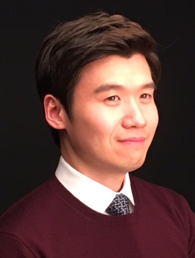
Ph.D. Students
-
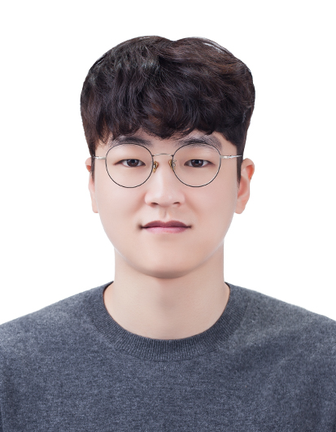
Jaeuk Shin
B.S., Math, Seoul National University
M.S., Math, Seoul National University
Research Interest: Reinforcement Learning, Autonomous Systems
-
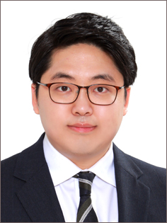
Gihwan Kim
B.S., ECE, Seoul National University
M.S., ECE, Seoul National University
Research Interest: Autonomous Systems
-
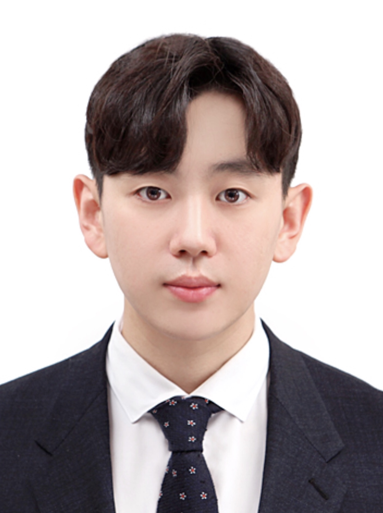
Giho Kim
B.S., IEOR, Seoul National University
Research Interest: Reinforcement Learning, Optimization for Machine Learning
-
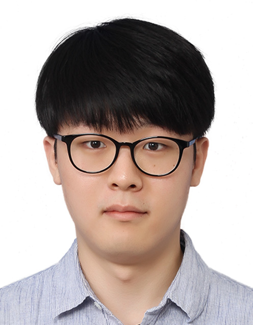
Mingyu Park
B.S., Aerospace Engineering, Seoul National University
Research Interest: Reinforcement Learning, POMDP
-
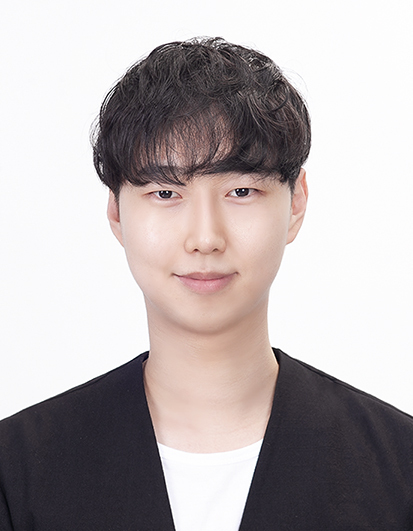
Chanwoong Park
B.S., ECE, Seoul National University
Research Interest: Optimization for Machine Learning
-
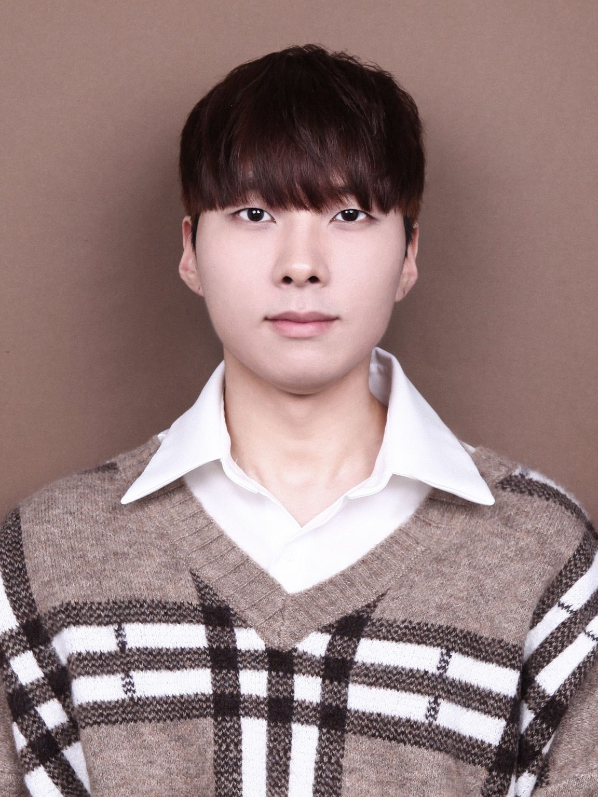
Jaeseok Joo
B.S., ECE, Seoul National University
Research Interest: Reinforcement Learning
-
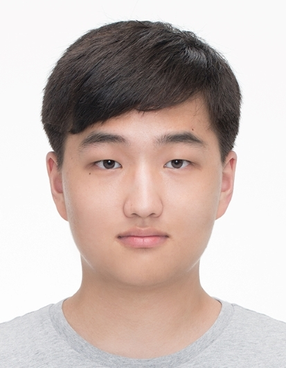
Joon Ho Han
B.S., ECE, Seoul National University
Research Interest: Reinforcement Learning
-
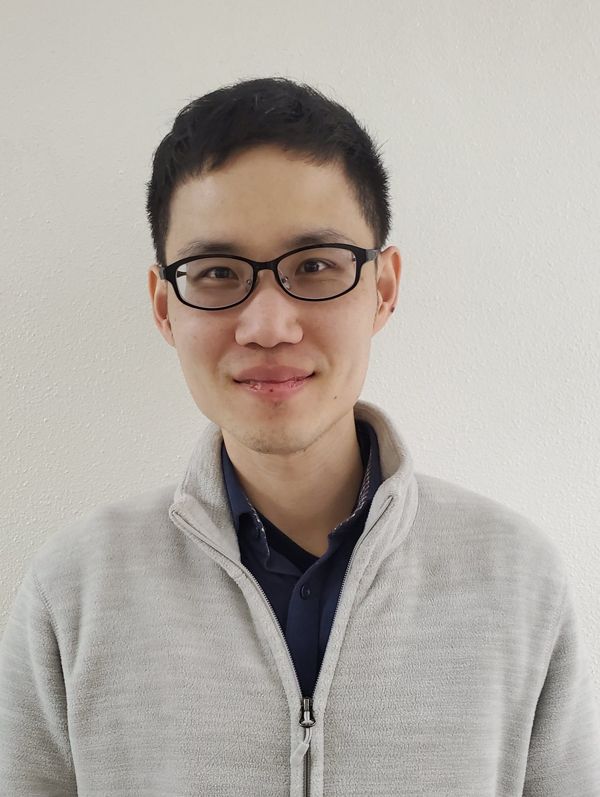
Howon Lee
B.S., ECE, Seoul National University
M.S., ECE, University of Southern CaliforniaResearch Interest: Autonomous Systems
-
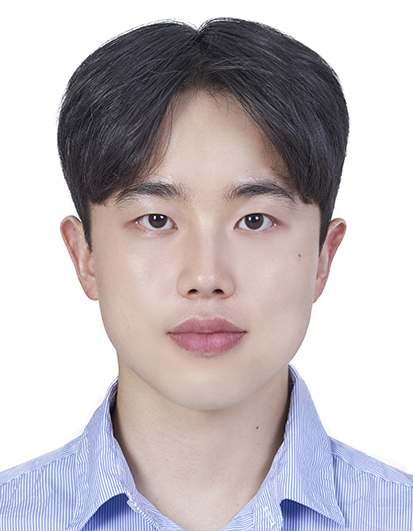
Wonhyung Jung
B.S., ECE, Seoul National University
Research Interest: Reinforcement Learning
-
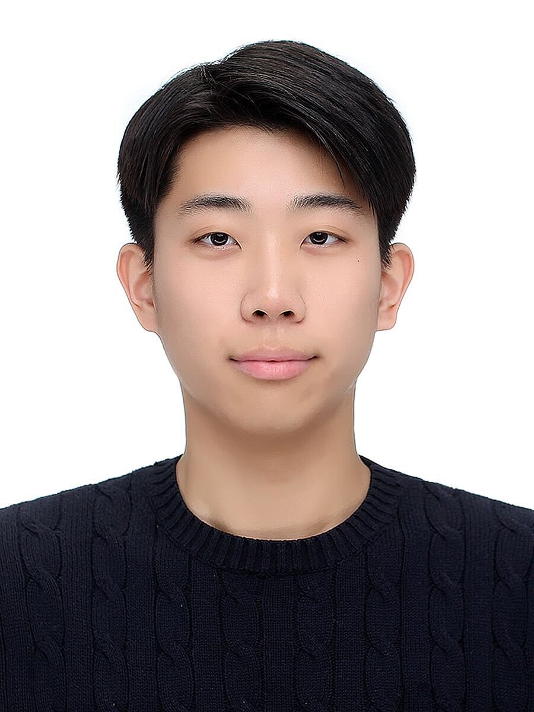
Jungjin Lee
B.S., ME, Seoul National University
Research Interest: Stochastic Control
-
Sungkwon On
B.Eng./M.Eng., University of Oxford
Research Interest: Reinforcement Learning
Masters Students
-
Lee
B.S., Mathematics, Seoul National University
Research Interest: Autonomous Systems
Administrative Assistant
-

Soonkyung Jung
Email: newan83@snu.ac.kr
Alumni
- Astghik Hakobyan (Ph.D., 2023) – Assistant Professor, National Polytechnic University of Armenia
- Yeoneung Kim (Postdoc., 2022) – Assistant Professor, Dept. of Applied Artificial Intelligence, SeoulTech
- Jeongho Kim (Postdoc., 2021) – Assistant Professor, Dept. of Applied Mathematics, Kyung Hee University
- Gihun Kim (M.S., 2023) - Preparing for studying abroad
- Melike Ermis (M.S., 2021) – Startup
- Subin Huh (M.S., 2020) – Samsung Electronics
- Taewoo Kang (M.S., 2020) – TmaxSoft
- Minhyuk Jang (B.S., 2025) – Ph.D. program, UIUC ME
- Jihoon Kim (B.S., 2022) – Ph.D. program, UC Berkeley IEOR
- Keunwoo Lim (B.S., 2021) – Ph.D. program, Univ. of Washington Applied Math
- Kihyun Kim (B.S., 2021) – Ph.D. program, MIT EECS
- Wonkyung Do (B.S., 2019) – Ph.D. program, Stanford University
- Sunho Jang (B.S., 2019) – Ph.D. program, Univ. of Michigan EECS
- Juan Moreno Nadales (Visitor, 2022) – Ph.D. program, Universidad de Sevilla, Spain